Intro to B-form
A quick introduction to the B-form.
Copyright 1987-2003 C. de Boor and The MathWorks, Inc. $Revision: 1.22 $ $Date: 2003/02/13 23:15:21 $
Overview
In this toolbox, a pp function in B-form is often called a SPLINE.
The B-FORM of a (univariate) pp is specified by its (nondecreasing) k n o t sequence t and by its B-spline c o e f f i c i e n t sequence a .
SPMAK(t,a) returns the corresponding B-form, for use in FN... commands.
The resulting spline is of o r d e r k := LENGTH(t) - SIZE(a,2). This means that all its polynomial pieces have degree < k.
t = [.1 .4 .5 .8 .9]; fnplt(spmak(t,1),2.5); tmp = repmat(t,3,1); ty = repmat(.1*[1;-1;NaN],1,5); hold on plot(tmp(:),ty(:)) text(.65,.5,'B( \cdot | .1, .4, .5, .8, .9)','Fontsize',10) text(.02,1.,'s(x) = \Sigma_j B( x | t_j , \ldots, t_{j+k} ) a(:,j)','Fontsize',18,'color','r') axis([0 1 -.2 1.2]) hold off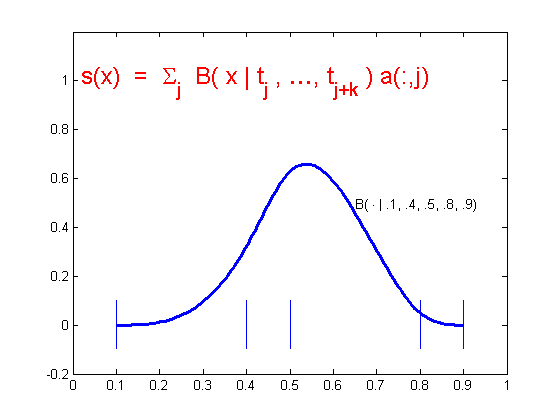
To say that s has knots t and coefficients a means that
n
s(x) := sum B_{j,k}(x) * a(:,j) , with B_(j,k) = B( . | t_j, ..., t_{j+k} )
j = 1
the j-th B-SPLINE of ORDER k for the given KNOT SEQUENCE t ,
i.e., the B-spline with knots t_j, ..., t_{j+k} ; see the sample B-spline above.
Local partition of unity and convex hull property
The value of the spline s(x) = sum_j B_{j,K}(x) a(:,j) at any x in the knot interval [t_i .. t_{i+1}] is a CONVEX combination of the k coefficients a(:.i-k+1), ..., a(:,i) since, on that interval, only the k B-splines B_{i-k+1,k}, ..., B_{i,k} are nonzero, and they are nonnegative there and sum to 1.
This is often summarized by saying that the B-splines provide a LOCAL (nonnegative) PARTITION of UNITY .
k = 3; n = 3; t = [1 1.7 3.2 4.2 4.8 6]; tt = (10:60)/10; vals = fnval(spmak(t,eye(k)),tt); plot(tt.',vals.'); hold on ind = find(tt>=t(3)&tt<=t(4)); plot(tt(ind).',vals(:,ind).','linewi',3) plot(t([3 4]),[1 1],'w','linewi',3) axis([-.5 7 -.5 1.5]) ty = repmat(.1*[1;-1;NaN],1,6); plot([0 0 -.2 0 0 -.2 0 0],[-.5 0 0 0 1 1 1 1.5],'k') text(-.5,0,'0') text(-.5,1,'1') tmp = repmat(t,3,1); plot(tmp(:),ty(:),'k'); yd = -.25; text(t(1),yd,'t_{i-2}'); text(t(3),yd,'t_i'); text(t(4),yd,'t_{i+1}'); text(1.8,.5,'B_{i-2,3}'); text(5,.45,'B_{i,3}'); axis off hold off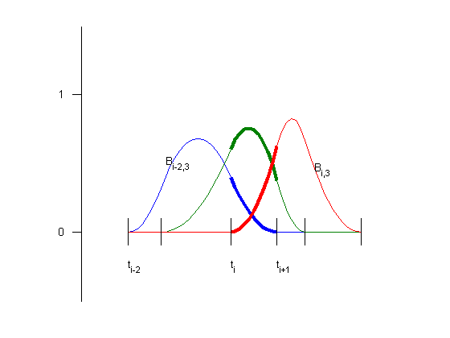
Convex hull property (cont.) and control polygon
When the coefficients are points in the plane and, correspondingly, the spline s(x) = sum_j B_{j,k}(x) a(:,j) traces out a curve, this means that the curve piece { s(x) : t_i <= x <= t_{i+1} } lies in the convex hull (shown in yellow above) of the k points a(:,i-k+1), ... a(:,i).
For a quadratic spline (i.e., k = 3), as shown here, it even means that the curve is tangent to the CONTROL POLYGON (shown in black dashes). This is the broken line that connects the coefficients (which are called CONTROL POINTS in this connection and shown here as open circles).
t = 1:9; c = [2 1.4;1 .5; 2 -.4; 5 1.4; 6 .5; 5 -.4].'; sp = spmak(t,c); fill(c(1,3:5),c(2,3:5),'y','edgecolor','y'); hold on fnplt(sp,t([3 7]),1.5) fnplt(sp,t([5 6]),3) plot(c(1,:),c(2,:),':ok') axis([.5 7 -.8 1.8]) axis off text(2,-.55,'a(:,i-2)') text(5,1.6,'a(:,i-1)') text(6.1,.5,'a(:,i)') hold off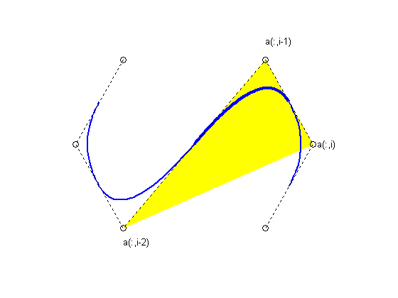
We can think of the graph of the SCALAR-valued spline s = sum_j B_{j,k}*a(j) as the curve x |--> (x,s(x)) . Since x = sum_j B_{j,k}(x) t^*_j for x in the interval [t_k .. t_{n+1}] and with t^*_i : = (t_{i+1} + ... + t_{i+k-1})/(k-1), i = 1:n, the knot averages obtainable by AVEKNT(t,k) , the CONTROL POLYGON for a scalar-valued spline is the broken line with vertices (t^*_i, a(i)), i=1:n.
The example shows a CUBIC spline (k = 4), with 4-fold end knots, hence t^*_1 = t_1 and t^*_n = t_{n+k} .
t = [0 .2 .35 .47 .61 .84 1]*(2*pi); s=t([1 3 4 5 7]); knots = augknt(s,4); sp = spapi(knots,t,sin(t)+1.8); fnplt(sp,2); hold on c = fnbrk(sp,'c'); ts = aveknt(knots,4); plot(ts,c,':ok') tt = [s;s;repmat(NaN,size(s))]; ty = repmat(.25*[-1;1;NaN], size(s)); plot(tt(:),ty(:),'r') plot(ts(1,:),zeros(size(ts)),'*') text(knots(5),-.5,'t_5') text(ts(2),-.45,'t^*_2') text(knots(1)-.28,-.5,'t_1=t_4') text(knots(end)-.65,-.45,'t_{n+1}=t^*_n=t_{n+4}') axis([-.72 7 -.5 3.5]) axis off hold off savesp = sp;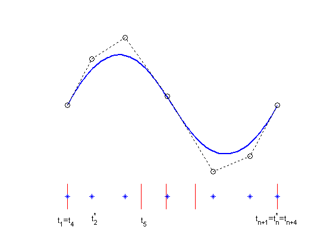
The essential parts of the B-form are the knot sequence t and the B-spline coefficient sequence a . Other parts are the NUMBER n of the B-splines or coefficients involved , the ORDER k of its polynomial pieces, and the DIMENSION d of its coefficients. In particular, size(a) equals [d,n] .
There is one more part, namely the BASIC INTERVAL , [ t(1) .. t(end) ]. It is used as the default interval when plotting the function. Also, while the spline is taken to be continuous from the right, it is made continuous from the left at the right endpoint of the basic interval, as illustrated above, where values of the spline made by
>> sp = spmak(augknt(0:3,3),[-1,0,1,0,-1]);
are plotted.
b = 0:3; sp = spmak(augknt(b,3),[-1,0,1,0,-1]); x = linspace(-1,4,51); plot(x,fnval(sp,x),'x') hold on axis([-2 5,-1.5,1]) tx = repmat(b,3,1); ty = repmat(.15*[1;-1;NaN],1,length(b)); plot(tx(:),ty(:),'-r') hold off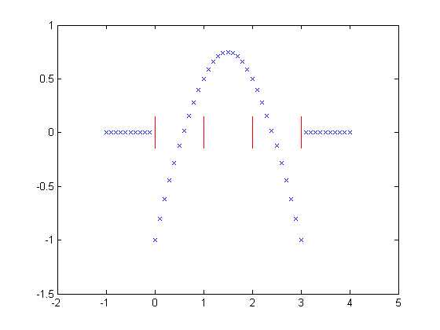
FNBRK can be used to obtain any or all parts of a B-form. For example, here is the output provided by FNBRK(SP), with SP the B-form of the spline shown above:
knots(1:n+k) 0 0 0 1 2 3 3 3 coefficients(d,n) -1 0 1 0 -1 number n of coefficients 5 order k 3 dimension d of target 1
However, there is usually NO NEED to know any of these parts. Rather, one uses commands like SP = SPAPI(...) or SP = SPAPS(...) to construct the B-form of a spline from some data, then uses commands like FNVAL(SP,...), FNPLT(SP,...), FNDER(SP) etc., to make use of the spline constructed, without any need to look at its various parts.
The next slides give more detailed information about the B-splines, in particular about the important role played by knot MULTIPLICITY .
b = 0:3; sp = spmak(augknt(b,3),[-1,0,1,0,-1]); x = linspace(-1,4,51); plot(x,fnval(sp,x),'x'), hold on, axis([-2 5,-1.5,1]), tx = repmat(b,3,1); ty = repmat(.15*[1;-1;NaN],1,length(b)); plot(tx(:),ty(:),'-r') hold off

Here, for k=2,3,4, is a B-spline of order k , and below it its first and second (piecewise) derivative, to illustrate the following facts (try out the BSPLIGUI if you want to experiment with examples of your own).
1. The B-spline B_{j,k} = B( . | t_j, ..., t_{j+k}) is pp of order k with breaks at t_j, ..., t_{j+k} (and nowhere else). Actually, its nontrivial polynomial pieces are all of exact degree k-1 .
E.g., the rightmost B-spline involves 5 knots, hence is of order 4 , i.e., a CUBIC B-spline. Correspondingly, its second derivative is piecewise linear.
cl = ['g','r','b','k','k']; v = 5.4; d1 = 2.5; d2 = 0; s1 = 1; s2 = .5; t1 = [0 .8 2]; t2 = [3 4.4 5 6]; t3 = [7 7.9 9.2 10 11]; tt = [t1 t2 t3]; ext = tt([1 end])+[-.5 .5]; plot(ext([1 2]),[v v],cl(5)) hold on plot(ext([1 2]),[d1 d1],cl(5)) plot(ext([1 2]),[d2 d2],cl(5)) tmp=NaN; ts = [tt;tt;repmat(NaN,size(tt))]; ty = repmat(.2*[-1;0;NaN],size(tt)); plot(ts(:),ty(:)+v,cl(5)) plot(ts(:),ty(:)+d1,cl(5)) plot(ts(:),ty(:)+d2,cl(5)) b1 = spmak(t1,1); p1 = [t1;0 1 0]; db1 = fnder(b1); p11 = fnplt(db1,'j'); p12 = fnplt(fnder(db1)); lw = 2; plot(p1(1,:),p1(2,:)+v,cl(2),'linew',lw) plot(p11(1,:),s1*p11(2,:)+d1,cl(2),'linew',lw) plot(p12(1,:),s2*p12(2,:)+d2,cl(2),'linew',lw) axis([-1 12 -2 6.5]) b1 = spmak(t2,1); p1 = fnplt(b1); db1 = fnder(b1); p11 = [t2;fnval(db1,t2)]; p12=fnplt(fnder(db1),'j'); plot(p1(1,:),p1(2,:)+v,cl(3),'linew',lw) plot(p11(1,:),s1*p11(2,:)+d1,cl(3),'linew',lw) plot(p12(1,:),s2*p12(2,:)+d2,cl(3),'linew',lw) b1 = spmak(t3,1); p1 = fnplt(b1); db1 = fnder(b1); p11 = fnplt(db1); p12=[t3;fnval(fnder(db1),t3)]; plot(p1(1,:),p1(2,:)+v,cl(4),'linew',lw) plot(p11(1,:),s1*p11(2,:)+d1,cl(4),'linew',lw) plot(p12(1,:),s2*p12(2,:)+d2,cl(4),'linew',lw) tey = v+1.5; text(t1(2)-.5,tey,'linear','color',cl(2)) text(t2(2)-.8,tey,'quadratic','color',cl(3)) text(t3(3)-.5,tey,'cubic','color',cl(4)) text(-2,v,'B'), text(-2,d1,'DB'), text(-2,d2,'D^2B') axis off, hold off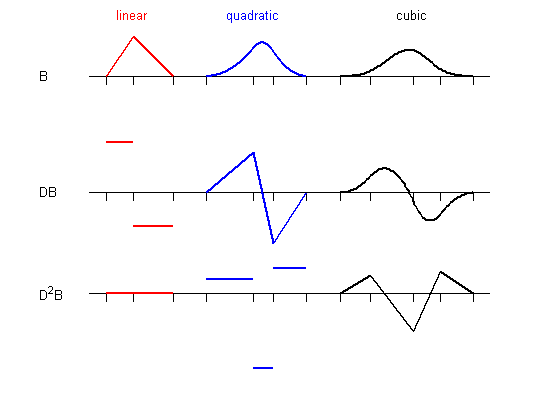
2. B_{j,k} is positive on the interval (t_j .. t_{j+k}) and is zero off that interval. It also vanishes at the endpoints of that interval (unless the endpoint is a knot of multiplicity k ; see the rightmost example on the next slide).
3. Knot MULTIPLICITY determines the smoothness with which the two adjacent polynomials join across that knot. In shorthand, the rule is:
knot multiplicity + number of smoothness conditions = order
Above you see cubic B-splines and, below them, their first two derivatives, with a certain knot of multiplicity 1, 2, 3, 4 (as indicated by the length of the knot line).
E.g., since the order is 4 , a double knot means just 2 smoothness conditions, i.e., just continuity across that knot of the function and its first derivative.
d2 = -1; t1=[7 7.9 9.2 10 11]-7; t2=[7 7.9 7.9 9 10]-2; t3=[7 7.9 7.9 7.9 9]+2; t4=[7 7.9 7.9 7.9 7.9]+5; plot(1,1,'or') [m,tt]=knt2mlt([t1 t2 t3 t4]); ext = tt([1 end])+[-.5 .5]; plot(ext,[v v],cl(5)), hold on plot(ext,[d1 d1],cl(5)) plot(ext,[d2 d2],cl(5)) ts = [tt;tt;repmat(NaN,size(tt))]; ty = .2*[-m-1;zeros(size(m));m]; plot(ts(:),ty(:)+v,cl(5)) plot(ts(:),ty(:)+d1,cl(5)) plot(ts(:),ty(:)+d2,cl(5)) b1 = spmak(t1,1); p1=fnplt(b1); db1=fnder(b1); p11=fnplt(db1); p12=[t1;fnval(fnder(db1),t1)]; plot(p1(1,:),p1(2,:)+v,cl(1),'linew',lw) plot(p11(1,:),s1*p11(2,:)+d1,cl(1),'linew',lw) plot(p12(1,:),s2*p12(2,:)+d2,cl(1),'linew',lw) text(-2,v,'B'), text(-2,d1,'DB'), text(-2,d2,'D^2B') b1 = spmak(t2,1); p1=fnplt(b1); db1=fnder(b1); p11=fnplt(db1); p12=fnplt(fnder(db1),'j'); plot(p1(1,:),p1(2,:)+v,cl(2),'linew',lw) plot(p11(1,:),s1*p11(2,:)+d1,cl(2),'linew',lw) plot(p12(1,:),s2*s2*p12(2,:)+d2,cl(2),'linew',lw) b1 = spmak(t3,1); p1=fnplt(b1); db1=fnder(b1); p11=fnplt(db1,'j'); p12=fnplt(fnder(db1),'j'); plot(p1(1,:),p1(2,:)+v,cl(3),'linew',lw) plot(p11(1,:),s1*s2*p11(2,:)+d1,cl(3),'linew',lw) plot(p12(1,:),s2*s2*p12(2,:)+d2,cl(3),'linew',lw) b1 = spmak(t4,1); p1=fnplt(b1); db1=fnder(b1); p11=fnplt(db1); p12=fnplt(fnder(db1)); plot(p1(1,:),p1(2,:)+v,cl(4),'linew',lw) plot(p11(1,:),s2*p11(2,:)+d1,cl(4),'linew',lw) plot(p12(1,:),s2*s2*p12(2,:)+d2,cl(4),'linew',lw) text(t2(2)-.5,tey,'2-fold','color',cl(2)) text(t3(2)-.8,tey,'3-fold','color',cl(3)) text(t4(3)-.8,tey,'4-fold','color',cl(4)) axis off, hold off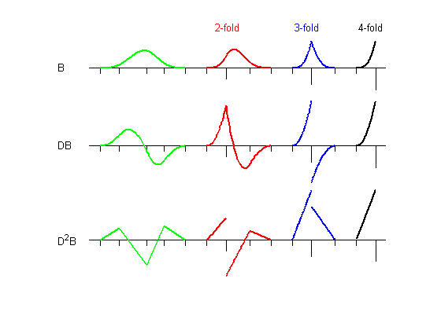
Any B-form can be REFINED, i.e., converted, by KNOT INSERTION, into the B-form for the same function, but for a finer knot sequence. The finer the knot sequence, the closer is the control polygon to the function being represented.
The refined control polygon shown above in red is obtained for the cubic spline SP of a previous picture by the following commands:
>> b = knt2brk(fnbrk(sp,'k')); spref = fnrfn( sp, (b(2:end)+b(1:end-1))/2); >> cr = fnbrk(spref,'c'); plot( aveknt( fnbrk(spref,'knots'), 4), cr,':r*')
sp = savesp; fnplt(sp,2.5); hold on c = fnbrk(sp,'c'); plot(aveknt(fnbrk(sp,'k'),4),c,':ok') b=knt2brk(fnbrk(sp,'k')); spref = fnrfn(sp,(b(2:end)+b(1:end-1))/2); cr = fnbrk(spref,'c'); plot(aveknt(fnbrk(spref,'knots'),4),cr,':*r') axis([-.72 7 -.5 3.5]) axis off hold off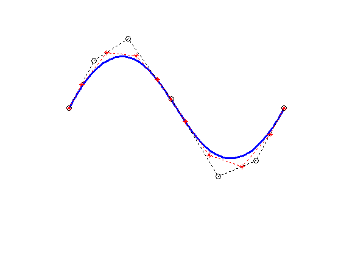
REFINEMENT and KNOT INSERTION (cont.)
In this second example, we start with the vertices of the standard diamond as our control points, but run through the sequence twice:
>> ozmz = [1 0 -1 0]; c = [ozmz ozmz 1; 0 ozmz ozmz]; circle = spmak(-4:8,c); >> fnplt(circle), hold on, plot(c(1,:),c(2,:),':ok'), hold off
However, when we plot the resulting spline, we get a curve that begins and ends at the origin, due to the fact that we chose to make the knot sequence simple, hence our spline vanishes at the endpoints of its basic interval, [-4 .. 8] . We really only want the part corresponding to the interval [0 .. 4], as can be seen by plotting just that part, more boldly: >> fnplt(circle,[0 4],2)
ozmz = [1 0 -1 0];
c = [ozmz ozmz 1; 0 ozmz ozmz];
circle = spmak(-4:8,c);
fnplt(circle)
hold on
plot(c(1,:),c(2,:),':ok')
axis(1.1*[-1 1 -1 1])
axis equal
axis off
fnplt(circle,[0 4],2)
hold off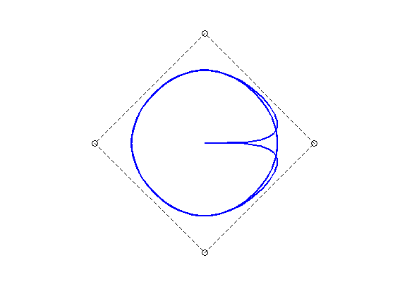REFINEMENT and KNOT INSERTION (cont.)
To get just the circle, we restrict our spline to the interval [0 .. 4]. We do this by converting to ppform, restricting to [0 .. 4], then converting to B-form.
>> circ = fn2fm( fnbrk( fn2fm(circle,'pp'), [0 4]), 'B-'); fnplt(circ,2.5) >> cc = fnbrk(circ,'c'); hold on, plot(cc(1,:),cc(2,:),':ok')
Refinement of the resulting knot sequence leads to a control polygon much closer to the circle:
>> ccc = fnbrk(fnrfn(circ,0.5:4),'c'); plot(ccc(1,:),ccc(2,:),'-r*'), hold off
circ = fn2fm(fnbrk(fn2fm(circle,'pp'),[0 4]),'B-'); fnplt(circ,2.5) hold on axis(1.1*[-1 1 -1 1]) axis equal axis off cc = fnbrk(circ,'c'); plot(cc(1,:),cc(2,:),':ok') ccc = fnbrk(fnrfn(circ,.5:4),'c'); plot(ccc(1,:),ccc(2,:),'-r*') hold off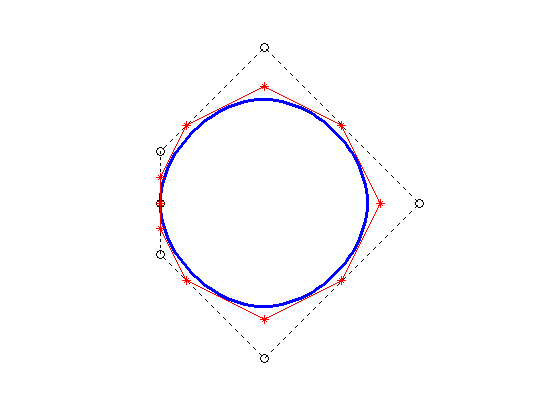
A spline in this toolbox can also be multivariate, namely the tensor product of univariate splines. The B-form for such a function is only slightly more complicated, with the knots now a cell array containing the various univariate knot sequences, and the coefficient array suitably multidimensional.
For example, the above random spline surface results from the following:
>> fnplt( spmak( {augknt(0:4,4),augknt(0:4,3)}, rand(7,8) ) )
This spline is cubic in the first variable (there are 11 knots and 7 coefficients in that variable), but only piecewise constant in the second variable ((2+5+2)-8 = 1).
fnplt( spmak( {augknt(0:4,4),augknt(0:4,3)}, rand(7,8) ) )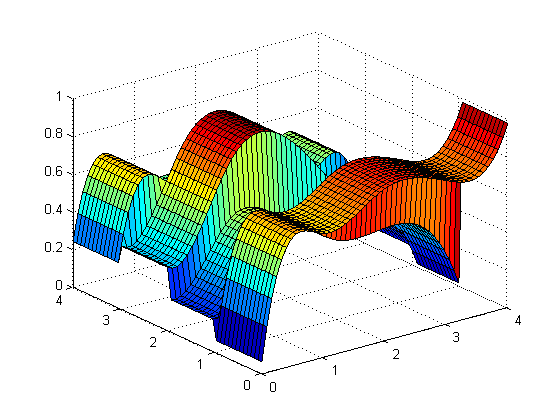